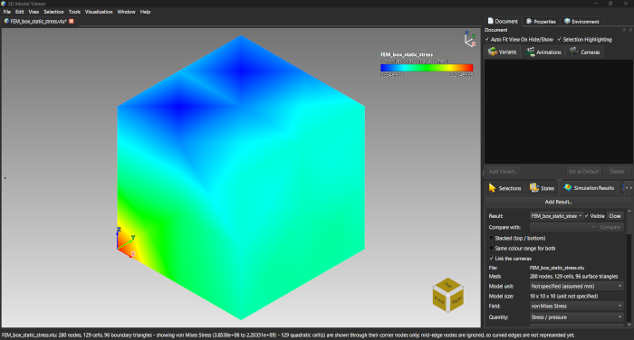
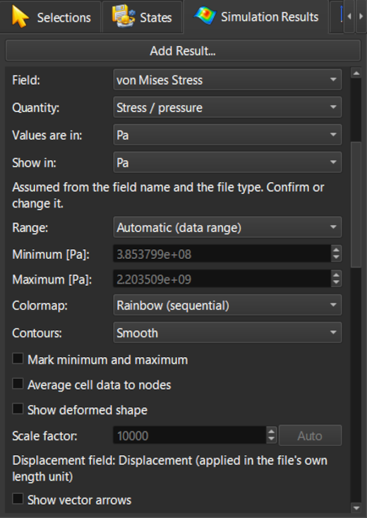
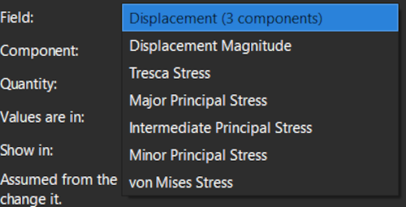
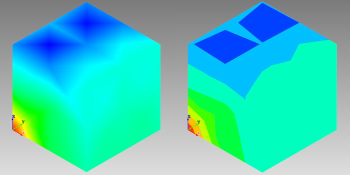
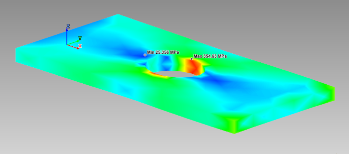
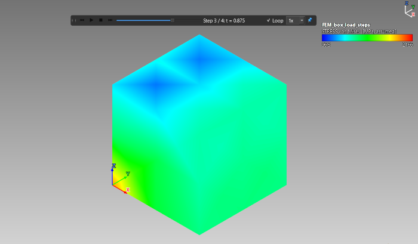
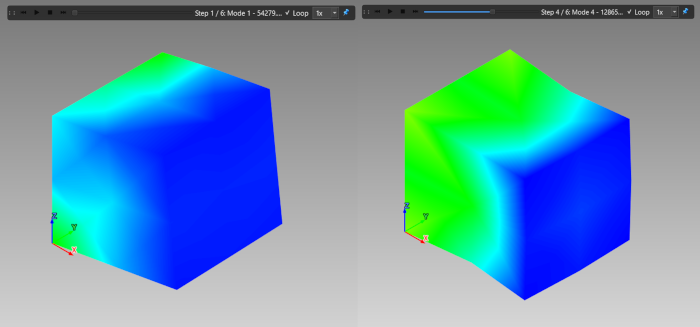

Lezione 19: Risultati di simulazione
Introduzione
ModelViewer mostra i risultati che un solutore ha già scritto: non esegue simulazioni. Apri il file dei risultati di un solutore a elementi finiti o di flusso e il modello compare come la sua superficie esterna, colorata secondo un campo di risultati come tensione, temperatura o velocità. Questa lezione spiega come aprire un risultato, scegliere il campo di colore, mostrare la deformazione, indicare le unità e scorrere i passi di tempo.
File di esempio per questa lezione
Si trovano tutti nella cartella sample-models/Simulation dell'installazione.
| File | Contenuto |
|---|---|
FEM_box_static_stress.vtu | Un'analisi statica di una scatola da 10 mm. Si apre colorata secondo la tensione di von Mises. |
FEM_box_load_steps.frd | La stessa scatola, con il carico aumentato in quattro passi. |
FEM_box_modes.frd | I primi sei modi di vibrazione, con le loro frequenze. |
FEM_box_thermal_transient.frd | Calore che entra nella scatola in 20 passi di tempo. |
plate_with_hole.frd | Una piastra con un foro, tirata in una direzione: la concentrazione di tensione al foro. |
Aprire un risultato
FEM_box_static_stress.vtu. Un risultato si apre nel proprio documento.
FEM_box_static_stress.vtu appena aperto, colorato secondo la tensione di von Mises
La scheda Risultati di simulazione con Campo, Componente, Intervallo, Mappa colori e ContorniScegliere il campo di colore
- Campo e Componente: il campo secondo cui colorare (ad esempio spostamento, von Mises, Tresca o una tensione principale) e una sua componente o la sua intensità. I campi contrassegnati [celle] hanno un valore per elemento e vengono disegnati piatti.
- Intervallo: Automatico (tutti i passi) mantiene i colori confrontabili tra i passi, Automatico (questo passo) riscala ogni passo e Personalizzato permette di digitare un minimo e un massimo.
- Mappa colori e Contorni: cambia la scala di colori oppure trasforma il gradiente continuo in bande discrete.

L'elenco dei campi del risultato della scatola statica
Colori continui (a sinistra) e lo stesso campo con bande di contorno (a destra)Deformazione ed estremi

plate_with_hole.frd deformata, con minimo e massimo segnatiUnità
Molti file di risultati non indicano l'unità dei loro valori. Grandezza e I valori sono in permettono di specificarla (ad esempio una temperatura in gradi Celsius o kelvin, una tensione in megapascal) e la legenda mostra allora l'unità. FEM_box_thermal_transient.frd non indica alcuna unità di temperatura, quindi non ne viene assunta nessuna finché non ne scegli una.
Scorrere i passi di tempo
Un risultato con più passi (passi di carico, modi di vibrazione o passi di tempo) mostra in alto nella vista una linea temporale con riproduci/pausa, passo precedente e successivo, stop, un cursore, Ripeti e una scelta della velocità.
FEM_box_load_steps.frd e premi riproduci. L'intervallo di colori copre per impostazione predefinita tutti i passi, quindi un colore indica lo stesso valore in ogni fotogramma e si vede crescere la tensione.FEM_box_modes.frd. Ogni passo è un modo, etichettato da Mode 1 a 6 con la sua frequenza in hertz. Attiva Mostra forma deformata e scorrili.FEM_box_thermal_transient.frd: una faccia è mantenuta a 100, il resto parte da 20 e il calore si propaga in 20 passi di tempo.
La linea temporale in alto nella vista durante la riproduzione dei passi di carico
Due modi di vibrazione della scatola, deformatiAggiungere un risultato al documento corrente
File → Apri inserisce un risultato in un documento a sé. Per vedere un risultato insieme ad altri modelli, ad esempio un pezzo CAD e la sua analisi, usa Visualizzazione → Risultati di simulazione → Aggiungi risultato a questo documento.... La casella Risultato della scheda sceglie su quale risultato agiscono i comandi.
Salvare
Un risultato viene salvato in una sessione .mvf insieme alle sue impostazioni di vista: campo, intervallo, mappa colori, deformazione, sezioni e altro. Riaprendo la sessione la vista torna come l'avevi lasciata.
Prova tu stesso
- Apri
plate_with_hole.frd, riproduci i quattro passi di carico con Mostra forma deformata attivo e trova il punto più caldo. - Imposta Campo su una tensione principale e confrontala con von Mises; poi prova Personalizzato in Intervallo.
- Apri
FEM_box_thermal_transient.frde scegli un'unità di temperatura in I valori sono in; osserva come cambia la legenda. - Salva il documento come .mvf, chiudilo e aprilo di nuovo.